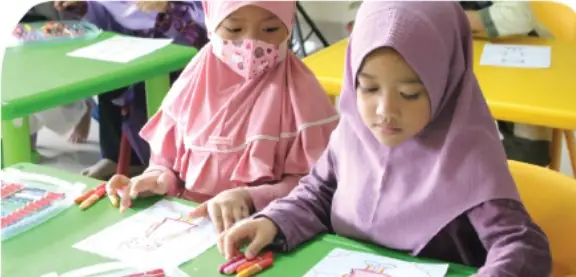
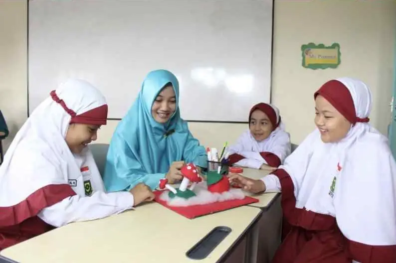
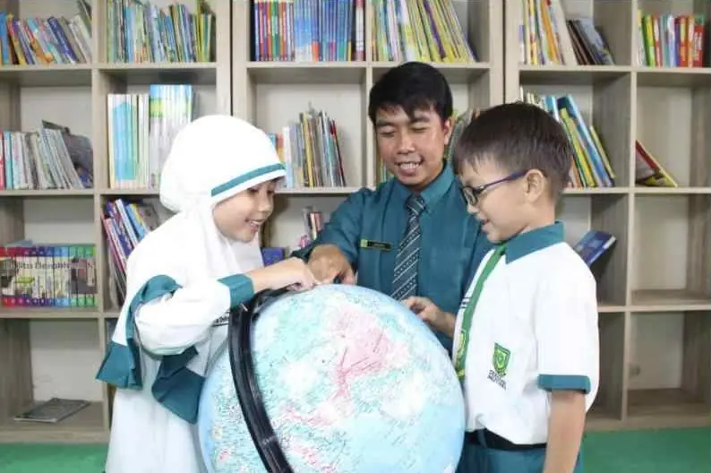
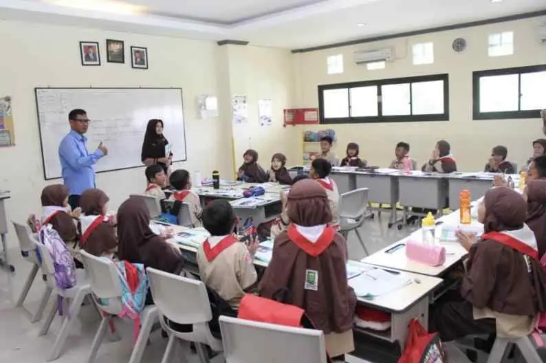
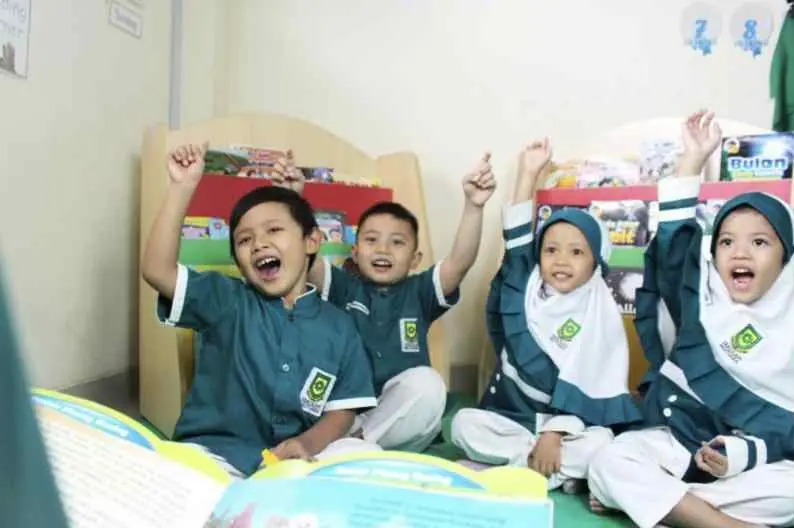

Galeri
Momen dari ruang kelas, perpustakaan, lapangan, dan berbagai kegiatan sekolah.














Kegiatan terbaru kami dapat dilihat di Instagram dan YouTube. Tautannya ada di halaman Kontak.
Siap bergabung dengan Mutiara School?
Hubungi tim kami lewat WhatsApp untuk info pendaftaran, biaya, dan kunjungan sekolah.
Daftar via WhatsApp